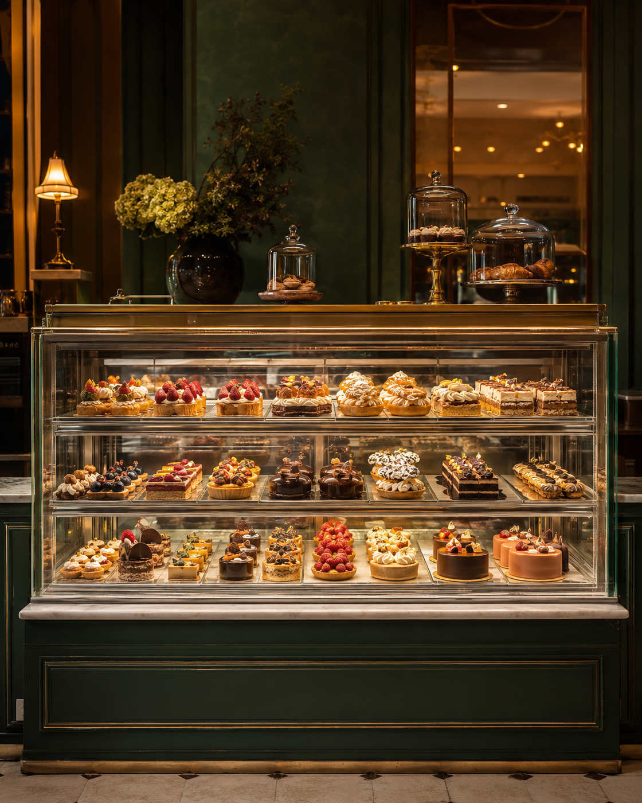

19 rue Terme · Lyon 1er
Des matins qui durent.
Des envies qui se savourent.
Brunch le week-end, galettes de sarrasin, gaufres salées, délices sucrés et boissons maison : une table faite pour prendre le temps.
ARCS CAFÉ · BRUNCH & PAUSES GOURMANDES
Le rendez-vous du week-end
Le brunch,
sans se presser.
Le samedi et le dimanche, on se retrouve autour d'une table généreuse : une création salée préparée à la minute, une douceur à choisir et une belle boisson pour prolonger le moment.
Découvrir l'esprit brunch

À composer
SaléDouceur
Boisson Samedi & dimanche
À chaque moment son envie
Quatre
univers.
Du premier café à la douceur de l'après-midi, tout est pensé pour s'attabler, partager ou emporter une pause qui fait plaisir.


Au comptoir
La vitrine
gourmande.
Desserts, sandwichs et bowls du jour : une sélection qui évolue selon les envies et les produits du moment, à emporter ou à savourer sur place.
- Douceurs maison
- Sandwichs du jour
- Bowls frais
Vos moments chez Arcs Café
Salle privatisable · Service traiteur sur place ou à emporter.
Parlons de votre événementNous trouver
Passez
nous voir.
Pour un café, un déjeuner, un brunch ou une douceur à emporter.